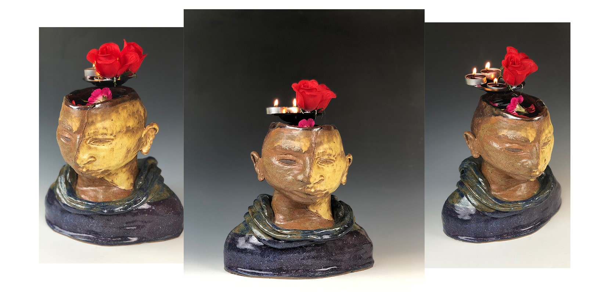
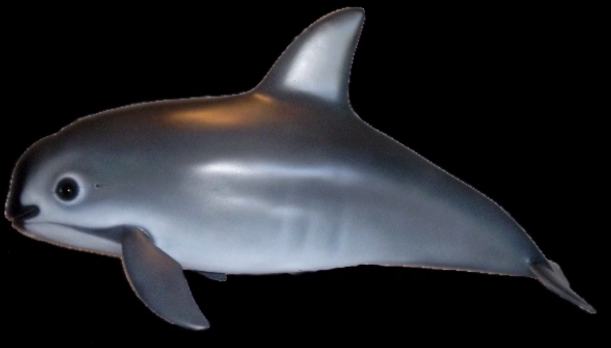

“Demon Detox”, Illustrator | InDesign, 2012
Demon Detox was created as a practice in magazine advertisement for fictional beverages that could be marketed in three different variations. This work started as a sketch for elixirs that could cure ailments caused by overconsumption of substances starting with pomegranate for hangovers, and developing into kiwi and chocolate flavors for excessive highs. At the time, I lived in New York City and felt that this drink would sell particularly well in a metropolitan market.
“Rene Magritte Biography”, Illustrator | InDesign layout, 2016
This layout showcases the style of 20th Century Belgian artist, Rene Magritte. The first stage was a grayscale portrait in vector created using Illustrator that was later placed onto one of two 8.5 x 11 inch facing pages in InDesign, then decorated with images and font in homage to this late graphic designer.
“Abandoned Menudo”, trompe l'oeil, ceramic, 2018
This ceramic triptych depicts three items particular to my Mexican heritage. Using the technique of slabs and slip making, I created an illusion of food that has been sitting unattended for many years. I was inspired by the stories my late grandmother used to recant about her life as a child growing up in a rural Mexico desert. A cold cola is a favorite pairing with Menudo, which must always be served with hand-made tortillas.
“Reincarnation”, bust, ceramic, 2018
With the objective to form a flower vase, I decided to model my idea after a photoshop image I had archived for reference in a failed pastel drawing. As many great ideas, I tucked it away only to reincarnate it into a new, three-dimensional body of work using the coil method and painting with high fire glazes. The 9 inch bust can hold 7 ounces of water, and the concept behind it is a complex story of human existence using the elements of fire, water, and earth (flowers). By way of alchemy, the water, saturated with magic from the burning rose, seeps down and transforms into gold, generating into flesh.
“My Name’s Yours, What’s Identity?”, Digital Video, Premiere, 2018

“Decomposition”, Digital Video Projection, Premiere | MadMapper, 2018

“E-Zoo 98”, Net Art, Atom | Github, 2018
This net art project originated with my earliest memory of the internet and developed to emulate the visual of the site, or in my case a program. I recalled using sitting in my sister's room, in front of her clunky Windows '98 computer. My favorite game on there was a digital "zoo" that would play montage clips of wild animals. I found this game exciting because it was like a TV with animal channels I could play over and over again in any order I wanted, but I also found this game to be rather frightening with its vicious sounds and graphics.
“Stop Meering Me”, Digital Video, Photoshop | Premiere, 2018